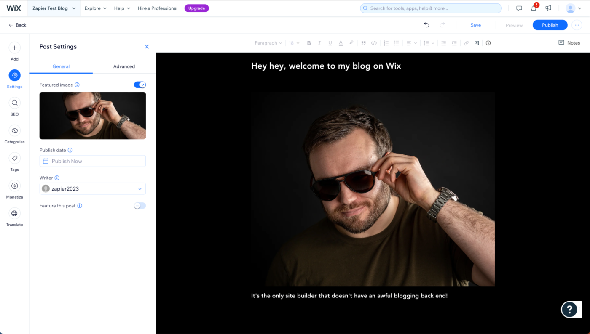

The 5 best blog sites in 2023
Choose the best blogging platform to showcase your content.
Blogging is far from dead. As the last 12 months of Twitter—sorry, X—drama have shown, allowing a social media platform to control your audience has risks. If you want a platform where you can share your thoughts properly and keep control of things, it's impossible to beat a blog. Plus, you can always share your blog posts on social media.
Similarly, if you run a business and want to provide resources and recommendations to customers, the best way to do it is often to add a blog to your website. Best of all, your blog content gets indexed by Google—unlike almost all social media posts—so you can drive potential customers to your business through content marketing (and without having to pay for ads). Look at the blog you're reading right now: Zapier blog posts get millions of views per month and are one of the most valuable ways of getting new customers at Zapier.
After testing all the most popular blog sites out there, these are the five best. And yes, two of them are WordPress, but there are a few great WordPress alternatives in here too.
The 5 best blog sites
- WordPress.org for total control
- WordPress.com for getting started quickly
- Ghost for an alternative to WordPress
- Wix for easily building more than a blog
- Blogger for using your own domain for free
What makes the best blogging platform?
How we evaluate and test apps
All of our best apps roundups are written by humans who've spent much of their careers using, testing, and writing about software. We spend dozens of hours researching and testing apps, using each app as it's intended to be used and evaluating it against the criteria we set for the category. We're never paid for placement in our articles from any app or for links to any site—we value the trust readers put in us to offer authentic evaluations of the categories and apps we review. For more details on our process, read the full rundown of "how we select apps to feature on the Zapier blog".
Blogs have been around since the earliest days of the internet, so most people have a pretty solid idea of what one is—even if they've never really thought to spell it out. Here's how I think about it: a blog is a website, maybe with a few other pages, but the most important part is the feed of blog posts in reverse chronological order.
There's a thin line between the software you need to create a blog and the kind of content management systems (CMS) used by large companies to power their websites. Many tools like WordPress and Drupal can be used to both build a blog or power a regular website.
When I was putting together this list, I used two criteria to decide on the essential blog-iness of the tools I was testing. They had to make it quick and easy to set up a real blog, and the backend where you write blog posts had to be nice to use and fully-featured. Squarespace, for example, is a great website builder that makes it possible to build a blog, but it's not particularly intuitive to set up, and the backend is awful to use. Drupal is an incredible CMS, but it's just too hard for non-developers to get started with to really be considered a universal blogging platform. I've tried it—it's just not worth the hassle for most people. WordPress, on the other hand, is both quick and easy for a regular human to launch a blog—and the backend is intuitive and great to use.
So, on this list, you'll only find tools that pass the essential blog-iness test. But that wasn't enough. I also required all the blogging tools to be:
Customizable
A big part of blogging is having a customized site, rather than just another generic Instagram account. I wanted tools that would allow you to choose your own theme and create your own branded blog. The easier it was to do, the better.
Well supported
While I wanted the tools on this list to be as easy to use as possible, when you're setting up a website, you'll almost always encounter some weird technical stuff. I required these tools to have either a community of users writing tutorials and helping people solve problems or a dedicated customer care team. (Which support option you have to rely on generally comes down to how much you're prepared to pay per month.)
Affordable
This isn't a list of the cheapest blogging platforms, but affordability and value for money were still key criteria. There are free blogging platforms that you can use to start a blog, but if you expect a large amount of traffic or want premium levels of support, you will have to pay something.
I've been a tech writer for over a decade—which is to say, I've been a blogger. To pick the best blog sites, I started with a list of around 25 potential blogging platforms, the vast majority of which I'd already tried out, reviewed, or used over the course of my career. A few good CMSes, website builders, and newsletter services were quickly cut for being too hard to set up or not having enough focus on blogging, and a few other options were too small to readily recommend or seemed to be discontinued.
That left me with around 10 options to test in full—and these are the five best. I'd love to say there are some undiscovered gems in there, but really, when it comes to something as crucial as powering a secure, fully-featured blog on the open internet, you really need to go with one of the big players.
The best blogging platforms at a glance
Best blogging platform for total control
WordPress.org
Pros
- Endlessly customizable and extensible
- Widely used, so finding how-to guides and professional developers is easy
Cons
- Generally requires a fair bit of tinkering to get things working perfectly and looking great
More than 40% of all websites run on WordPress, from tiny local sites to major publications. It's the most popular blogging platform and CMS by far, and since it's open source, it's free for you to run on your own server (well, other than the hosting costs).
If you want to be in control of everything with your blog, from how it looks to what you post, then WordPress.org is the option for you. And while you can run your own server from your basement, it's a lot easier to use a hosting service (like Bluehost or Kinsta) that can automatically install WordPress for you.
Not only does WordPress make the basics easy to do, but it really is endlessly customizable. There are tens of thousands of themes and plugins that change how it looks and what it does. There are themes for photographers and designers to show off their work, plugins that let you sell products through your blog posts, and anything else you can imagine. It's a fairly wild world out there, but there is great community support that can help you navigate it.
The downside of running your own WordPress installation is that, unless you pay for managed hosting or employ a developer, you really are on your own. While basic stuff like installing a theme is relatively simple, customizing it so that it looks good and works with your content may take a bit of Googling. Similarly, while blogging with WordPress is easy and the Gutenberg editor is great to use, adding extra functionality with a plugin and getting it to work with your setup isn't always user-friendly. Depending on what you're trying to do and your level of experience with web tools, you may find WordPress a cinch—or a bit of a nightmare.
Still, the upsides of WordPress far outweigh the downsides—and even if you're starting from scratch, its peculiarities don't take that long to learn.
WordPress also integrates with Zapier, so you can do things like automatically share your new posts to Facebook, Twitter, or LinkedIn.


Post new WordPress posts to your Facebook Page
WordPress + Facebook Pages

Post new WordPress posts to LinkedIn
WordPress + LinkedIn
WordPress.org is the blogging platform I use for my dog product review site, Bing's Best Things, and I'll use it again in the future for any other side projects.
WordPress price: "Free"
1. hosting costs from a few dollars to thousands of dollars per month.
2. plugins and themes cost from free to thousands of dollars per month.
Best blogging platform for getting started quickly
WordPress.com
Pros
- The WordPress experience without some of the hassle
- A fast and simple way to launch a great blog
Cons
- More expensive and less customizable than hosting your own WordPress site
WordPress.com is a hosted version of WordPress , run by the developers. It's super simple to get up and running. There are free accounts, but you have to pay to get anything close to the full customizability of the self-hosted version.
Getting started is easy: head to WordPress.com, sign up for a free account, answer a few simple questions, and, within minutes, you have a free blog with a .wordpress.com domain name (like harryszapiertestblog.wordpress.com). How the default theme looks and what the sample posts say is determined by how you answered the questions. It's pretty handy, although it does come with a few limitations: there are only 100 or so themes to choose from, some of which you have to pay for, there are ads for WordPress.com displayed on your site, and you have no access to support staff.
If you've ever used the self-hosted version of WordPress, you'll be right at home with WordPress.com. The backend is just a slightly simpler version, with most of the customization options removed. It's still the same great Gutenberg post editor: Go to Posts > Add New, write your blog, click Publish, and it's live on the internet, ready for the rest of the world to see. You can also add other pages if you want to have some permanent content, like an about page or a contact page. Put an afternoon into it, and you'll easily have a full blog up and running—though it will certainly look more generic
To move much beyond a basic blog with a .wordpress.com domain, you need to subscribe to a paid plan. The $9/month Personal plan lets you use your own domain name, removes ads, and gives you email support. You're still stuck with a limited number of basic themes unless you buy a premium theme or pay for the $18/month Premium plan, which grants you access to more themes and styling options. It's not until you pay for the $40/month Business plan or $70/month eCommerce plan that you can upload and use third-party themes and plugins, like you can with your own WordPress server.
If you want the WordPress experience (or at least everything but the customization) without all the hassle of self-hosting, then WordPress.com is a great option. It's super quick to get a simple blog started for free.
WordPress.com price:
1. Free plan available.
2. Premium plans start at $9/month.
Best WordPress alternative for most people
Ghost
Pros
- The best WordPress alternative out there—at least for blogging or building an audience
- Lots of features like memberships and newsletter subscriptions built in
Cons
- Less customizable than WordPress
WordPress has been around since the early 2000s. Over the years, it's picked up a lot of new features, and it definitely has its quirks. Some people consider it bloated and based on out-of-date, or at least not-in-vogue, technologies. The open source community surrounding it certainly isn't drama-free either. All this led John O'Nolan, a former WordPress developer, to create Ghost roughly a decade ago.
Ghost is designed to be a powerful, hassle-free blogging and audience management platform, especially for subscription-based publications. It's a bit more focused on blogging and publishing other content like newsletters than WordPress, which, after years of development, has a lot of CMS DNA.
Ghost has a similar business model to WordPress. The platform is free and open-source: anyone can download it and, provided they have the knowledge and resources to set up a server, run it for free. It's a little trickier to get off the ground than WordPress, as there are far fewer pre-configured options, but it's totally possible if you're determined. The developers also offer a hosted version, Ghost Pro, starting at $11/month. (Ghost is actually structured as a non-profit, so all the revenue from Ghost Pro is put back into developing the open source software.)
While Ghost started out as a pure blogging platform, it's leaned into the paid newsletter and community boom over the past couple of years. Think of it as a blog-based Patreon and Substack competitor. While you can easily turn off or ignore any of the subscription and membership features, if you want to charge people for access to premium posts, a weekly newsletter, and other extra content, the options are there. It's also a big factor in the pricing structure: the cheapest Ghost Pro plan is limited to 500 members, but essentially unlimited people can visit your site and read your free blog posts.
If you want something that's a bit more focused, Ghost is a great alternative to WordPress. Even if you don't want to use the membership features, you're still ignoring less of the platform and options than you are with WordPress if you're just trying to run a blog. Ghost—once you have it running or pay for Ghost Pro—offers a simpler experience overall, though you lose out on the raw freedom to add whatever features you want to your site. Still, a lot of things like SEO management and memberships that are available with plugins for WordPress come as standard with Ghost, so the relative lack of extensibility is unlikely to be an issue unless you're looking to build something truly custom.
Ghost also integrates with Zapier, so you can do things like share your new blog posts to Buffer or send Google Docs drafts straight into Ghost.


Share new posts from Ghost to Buffer
Ghost + Buffer

Send new drafts from Google Docs to Ghost
Google Docs + Ghost
Ghost price
1. Free for self-hosted.
2. from $11/month for Ghost Pro.
Best blogging tool for doing more than a blog
Wix
Pros
- Makes it easy to build a great website—including a blog
- Simpler to use than WordPress
Cons
- Expensive compared to the other options
Most website builders make for a pretty poor blogging experience. They either tuck the blog tools away in some weird subsection, are just awful to use, or both. Wix is the exception. Not only is it easy to build a website with it, but setting up a blog—and most importantly, posting to your blog—is just as simple.
When you start a site with Wix, you're asked to describe what you're trying to build. If you use the word "blog," it will literally add a blog. Then, in the Dashboard, you have a Blog section in the sidebar where you can write new posts, configure categories, and generally do bloggy things. It just works—and you can even import your old posts from WordPress.
Really, Wix is a great option for two kinds of people: those that want an even easier WordPress alternative, and those that want to build a full website where a blog is just one part of things.
WordPress has its quirks, and if you aren't tech-savvy, it can be tricky to get things set up exactly how you want. Wix's website builder is a lot easier to configure than installing WordPress themes and plugins. The catch is that you can get a WordPress blog set up with a custom domain for a couple of dollars a month; for similar features, you're looking at least at Wix's $16/month Light plan. If you're running a business, that might not be a big deal, but if you're starting a personal blog, the price can add up.
Similarly, while millions of people have built full websites using WordPress, Wix makes it simpler. If you want an online store, web bookings, or even just a big website, Wix's easier-to-use tools may make for a more pleasant experience—especially if you're looking at paying for managed WordPress hosting anyway. And Wix integrates with Zapier, so if you decide to build out your website, you'll be able to connect it to the other apps you use most.
Wix price
1. Free plan available
2. paid plans start at $16/month.
Best blog site for using your custom domain for free
Blogger
Pros
- Lets you use your own domain for free
- That's it
Cons
- Really, it's not great
Blogger isn't a standout blogging platform in terms of features. Even after an update in 2020, the interface is pretty stripped back, the built-in themes aren't stellar, and you can't customize things like the post structure. The post editor, for example, mimics an even uglier version of Google Docs—which just doesn't make for a great blogging experience. I'm shocked Google hasn't killed it yet.
Really, it's impossible to recommend, except that Blogger has one key feature that keeps it on this list: you can use a domain you already own, for free. With WordPress.com, on the other hand, unless you pay $4/month, you're stuck with a blogname.wordpress.com URL.
Sign in to Blogger with your Google account, and create your first blog by clicking New Blog.
Give it a name, and pick a theme. Then, click Settings in the sidebar, and under Publishing, select Custom Domain to add your custom domain name. Unfortunately, you can't buy one through Google anymore, so you'll need to configure things yourself with your domain registrar.
If you have a domain already and want to use it with your blog without any additional costs, or you just need somewhere to park a domain name so that it stays live, then Blogger is the service for you. But if you're looking for a more customizable blog that's under more active development, go with one of the other options.
Blogger price
1. Free, including using your own custom domain.
Which blogging platform should I use?
WordPress—whether self-hosted or through WordPress.com—is widely used for a reason: whatever you want your blog to be, it can do it. Ghost is more focused than WordPress but more expensive out of the gate; if you're starting a publication or newsletter, or just don't want to use WordPress, it's hard to find a better option. Wix is one of the best website builders—and it just so happens to be a decent blogging platform too. If you want the convenience of an easy-to-use site builder, it's a great choice. And while Blogger is ridiculously outdated, it's totally free—and you can use your own domain name.
Of course, there are lots of other blog platforms out there that didn't make our list. In particular, if you have developers on staff, a CMS like Joomla or Drupal, or even a headless CMS like Contentful, may be the best fit. They just aren't appropriate options for most people looking to start a blog.